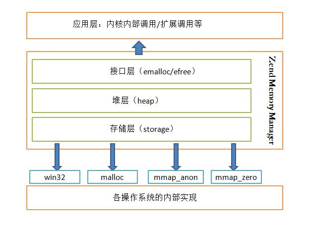

内存是计算机非常关键的部件之一，是暂时存储程序以及数据的空间，CPU只有有限的寄存器可以用于存储计算数据，而大部分的数据都是存储在内存中的，程序运行都是在内存中进行的。和CPU计算能力一样，内存也是决定计算效率的一个关键部分
计算中的资源中主要包含：CPU计算能力，内存资源以及I/O。
内存管理的主要工作是尽可能高效的利用内存。
操作系统直接管理着内存，所以操作系统也需要进行内存管理，内存管理是如此之重要，计算机中通常都有内存管理单元(MMU)用于处理CPU对内存的访问。
鉴于系统调用的开销，一些对性能有要求的应用通常会自己在用户态进行内存管理，例如第一次申请稍大的内存留着备用，而使用完释放的内存并不是马上归还给操作系统，可以将内存进行复用，这样可以避免多次的内存申请和释放所带来的性能消耗。
PHP不需要显式的对内存进行管理，这些工作都由Zend引擎进行管理了。PHP内部有一个内存管理体系，它会自动将不再使用的内存垃圾进行释放，这部分的内容后面的小节会介绍到。
Fatal error: Allowed memory size of X bytes exhausted (tried to allocate Y bytes)这个错误的信息很明确，PHP已经达到了允许使用的最大内存了，通常上来说这很有可能是我们的程序编写的有些问题。比如：一次性读取超大的文件到内存中，或者出现超大的数组，或者在大循环中的没有及时是放掉不再使用的变量，这些都有可能会造成内存占用过大而被终止。
PHP默认的最大内存使用大小是32M, 如果你真的需要使用超过32M的内存可以修改php.ini配置文件的如下配置:
memory_limit = 32M如果你无法修改php配置文件，如果你的PHP环境没有禁用ini_set()函数，也可以动态的修改最大的内存占用大小:
<?php
ini_set("memory_limit", "128M");memory_get_usage()，这个函数的作用是获取目前PHP脚本所用的内存大小。memory_get_peak_usage()，这个函数的作用返回当前脚本到目前位置所占用的内存峰值，这样就可能获取到目前的脚本的内存需求情况。前面之所以会说把变量unset掉时候_可能_会把它释放掉的原因是： 在PHP中为了避免不必要的内存复制，采用了引用计数和写时复制的技术， 所以这里unset只是将引用关系打破，如果还有其他变量指向该内存， 它所占用的内存还是不会被释放的。 当然这还有一种情况：出现循环引用，这个就得靠gc来处理了， 内存不会当时就是放，只有在gc环节才会被释放。
内存管理一般会包括以下内容：
PHP的内存管理可以被看作是分层（hierarchical）的。它分为三层：存储层（storage）、堆层（heap） 和接口层（emalloc/efree）。
PHP在存储层共有4种内存分配方案: malloc，win32，mmap_anon，mmap_zero，默认使用malloc分配内存
PHP内存管理器

接口层是一些宏定义。
在接口层下面是PHP内存管理的核心实现，我们称之为heap层。这个层控制整个PHP内存管理的过程
PHP中的内存管理主要工作就是维护三个列表：小块内存列表（free_buckets）、大块内存列表（large_free_buckets）和剩余内存列表（rest_buckets）。
ZendMM向系统进行的内存申请，并不是有需要时向系统即时申请，而是由ZendMM的最底层（heap层）先向系统申请一大块的内存，通过对上面三种列表的填充，建立一个类似于内存池的管理机制。
ZendMM对内存分配的处理主要有以下步骤
ZendMM在内存销毁的处理上采用与内存申请相同的策略，当程序unset一个变量或者是其他的释放行为时，ZendMM并不会直接立刻将内存交回给系统，而是只在自身维护的内存池中将其重新标识为可用，按照内存的大小整理到上面所说的三种列表（small,large,free）之中，以备下次内存申请时使用。
垃圾回收机制是一种动态存储分配方案。它会自动释放程序不再需要的已分配的内存块。自动回收内存的过程叫垃圾收集。
在PHP5.3版本之前，PHP只有简单的基于引用计数的垃圾回收，当一个变量的引用计数变为0时，PHP将在内存中销毁这个变量，只是这里的垃圾并不能称之为垃圾。
随着PHP的发展，PHP开发者的增加以及其所承载的业务范围的扩大，在PHP5.3中引入了更加完善的垃圾回收机制。新的垃圾回收机制解决了无法处理循环的引用内存泄漏问题。
PHP5.3中的垃圾回收机制使用了文章引用计数系统中的同步周期回收(Concurrent Cycle Collection in Reference Counted Systems)中的同步算法。
在PHP中，主要的内存管理手段是引用计数，引入垃圾收集机制的目的是为了打破引用计数中的循环引用，从而防止因为这个而产生的内存泄露。
垃圾收集机制基于PHP的动态内存管理而存在。PHP5.3为引入垃圾收集机制，在变量存储的基本结构上有一些变动
struct _zval_struct {
/* Variable information */
zvalue_value value; /* value */
zend_uint refcount__gc;
zend_uchar type; /* active type */
zend_uchar is_ref__gc;
};PHP的垃圾回收机制在执行过程中以四种颜色标记状态。
凡是位于速度相差较大的两种硬件之间的，用于协调两者数据传输速度差异的结构，均可称之为Cache。
PHP将缓存添加到内存管理机制中做了如下一些操作：
写时复制（Copy on Write，也缩写为COW)的应用场景非常多， 比如Linux中对进程复制中内存使用的优化，在各种编程语言中，如C++的STL等等中均有类似的应用。 COW是常用的优化手段，可以归类于：资源延迟分配。只有在真正需要使用资源时才占用资源， 写时复制通常能减少资源的占用。
PHP中的COW可以简单描述为：如果通过赋值的方式赋值给变量时不会申请新内存来存放新变量所保存的值，而是简单的通过一个计数器来共用内存，只有在其中的一个引用指向变量的值发生变化时才申请新空间来保存值内容以减少对内存的占用。
即使我们不使用引用，一个变量被赋值后，只要我们不改变变量的值 ，也不会新申请内存用来存放数据。据此我们很容易就可以想到一些COW可以非常有效的控制内存使用的场景：只是使用变量进行计算而很少对其进行修改操作，如函数参数的传递，大数组的复制等等等不需要改变变量值的情形。
COW的粒度为zval结构，由PHP中变量全部基于zval，所以COW的作用范围是全部的变量，而对于zval结构体组成的集合（如数组和对象等），在需要复制内存时，将复杂对象分解为最小粒度来处理。这样可以使内存中复杂对象中某一部分做修改时，不必将该对象的所有元素全部“分离复制”出一份内存拷贝；
<?php //例四
$foo = 1;
xdebug_debug_zval('foo');
$bar = $foo;
xdebug_debug_zval('foo');
$bar = 2;
xdebug_debug_zval('foo');
?>
//-----执行结果-----
foo: (refcount=1, is_ref=0)=1
foo: (refcount=2, is_ref=0)=1
foo: (refcount=1, is_ref=0)=1引用和前面提到的变量的引用计数和PHP中的引用并不是同一个东西，引用和C语言中的指针的类似，他们都可以通过不同的标示访问到同样的内容，但是PHP的引用则只是简单的变量别名，没有C指令的灵活性和限制。
PHP中有非常多让人觉得意外的行为，有些因为历史原因，不能破坏兼容性而选择暂时不修复，或者有的使用场景比较少。
<?php
$foo['love'] = 1;
$bar = &$foo['love'];
$tipi = $foo;
$tipi['love'] = '2';
echo $foo['love']; // 2 $bar变量的引用操作，将$foo['love']污染变成了引用，从而Zend没有对$tipi['love']的修改产生内存的复制分离。
PHP内核以接口的方式提供了内存管理，将内存管理对PHP内核的其它模块透明，从而提供更加高效的内存管理，减少内存碎片。